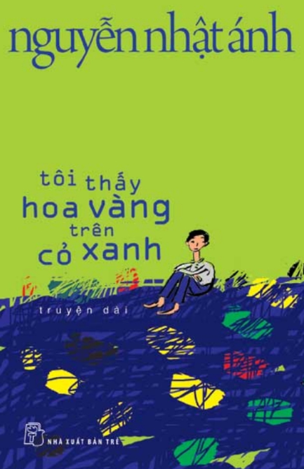

Tủ sách
- Truyện nổi bật
- Truyện mới
- Tiểu thuyết mới
- Truyện kiếm hiệp mới
- Truyện khoa học viễn tưởng
- Truyện trinh thám
- Góc cười
- Góc tâm sự

Truyện kể về giai đoạn mà đời người ai cũng từng từng qua nhưng đôi khi trong cuộc sống bộn bề với cơm áo gạo tiền và những nỗi lo không đặt hết tên, chúng ra đã ít nhiều quên mất nó từng tồn tại, đó là: Tuổi thơ. Tuổi thơ trong truyện Nguyễn Nhật Ánh không giống như bây giờ - khi người ta có nhiều thứ để chơi và nhiều nơi để chọn như ra công viên nước lướ ván hơcj đắm mình trong các game. Tuổi thơ trong truyện Nguyễn Nhật Ánh là khi bạn còn hòa mình với thiên nhiên, khi bạn thấy góc vườn nhà mình sao rộng thế, bạn "mặc nguyên quần áo dầm mưa ngoài trời" hay "bứt lá, chơi keng, chơi bày hàng hay lùng sục các bờ hào tìm hoa đủ dẻ".